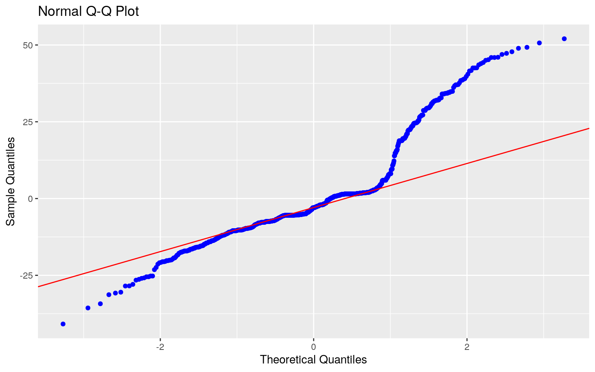

#read in data
library(readxl)
microbe_directory<-read_excel("microbe-directory.xlsx")
#read_excel("C:\\BNB2375_SDS348\\microbe-directory.xlsx")
microbe_directory->micro
#read_excel("C:\\Users\\britn\\Desktop\\microbe-directory.xlsx")For project 2, I will be looking at The Microbe Directory. The goal of The Microbe Directory is to compile information categorizing over 7,000 microorganisms. Microorganisms are classified from kingdom all the way down to species. Measures for each microbe include optimal temperature and pH, gram stain, extreme environment tolerance, biofilm formation, spore formation, pathogenicity, and antimicrobial resistance. The main variables I will be looking at are kingdom, optimal temperature, optimal pH, biofilm formation, tolerance to extreme environment, and pathogenicity. Across these variables, my dataset has information on 7,678 microorganisms.
kingdom refers to which kingdom the microorganism belongs to (Bacteria, Viruses, Viroids, Eukaryota, or Archaea). optimal_temperature refers to the optimal temperature in Celcius at which the microorganisms survives. optimal_ph refers to the optimal pH for the species of microorganism. biofilm is a binary variable which refers to whether the species forms a biofilm or not, with 1 corresponding to the formation of a biofilm, and 0 corresponding to no biofilm formation. Similarly, extreme_environment is a binary variable which refers to whether or not the microorganism is an extremophile, with 1 corresponding to a microorganism that is able to tolerate extreme living conditions, and 0 corresponding to a microorganism that cannot tolerate extreme living conditions. gram_stain refers to the visual appearance of the microorganism after staining. This appearance is categorized in three categories: Negative, Positive, or Indeterminate. For this dataset, Negative = 0, Positive = 1, Indeterminate = 2 for gram_stain. pathogenicity refers to the level of pathogenicity of a species, rated on a scale from 1 to 4, with 1 corresponding to "not belonging to a recognized group of disease-invoking agents in humans or animals and having an extended history of safe usage and 4 being a species that can cause a very serious human disease, for which no prophylaxis is known." (from https://www.ncbi.nlm.nih.gov/pmc/articles/PMC5883067/, doi:10.12688/gatesopenres.12772.1)
micro %>% select(-contains("citation"))->micro #remove unnecesary columns
#how many different species are present in the dataset?
micro%>%group_by(species)%>%summarize_all(n_distinct)%>%nrow## [1] 7678#Eyeball the assumption of multivariate normality by making multivariate plots of response variables for each group of the categorical variable
ggplot(micro, aes(x=optimal_temperature,y=optimal_ph))+geom_point(alpha = .5) + geom_density_2d(h=2) + facet_wrap(~kingdom)#how many observations for my selected variables are there by kingdom
micro%>%group_by(kingdom)%>%select(kingdom,microbe_id,optimal_temperature,optimal_ph)%>%summarize_all(n_distinct)## # A tibble: 5 x 4
## kingdom microbe_id optimal_temperature optimal_ph
## <chr> <int> <int> <int>
## 1 Archaea 228 66 50
## 2 Bacteria 3849 105 110
## 3 Eukaryota 111 14 6
## 4 Viroids 41 1 1
## 5 Viruses 3449 43 45#remove any microorganisms from the kingdom "Viroids" because there is only one entry for optimal temperature & one entry for optimal pH and the t test won't print output
micro2<-micro%>%filter(micro$kingdom!="Viroids")
#perform a MANOVA testing whether any of your numeric variables show a mean difference across levels of one of your categorical variables
man1<-manova(cbind(optimal_temperature,optimal_ph)~kingdom, data=micro2)
summary(man1)## Df Pillai approx F num Df den Df Pr(>F)
## kingdom 3 0.24363 42.632 6 1844 < 2.2e-16 ***
## Residuals 922
## ---
## Signif. codes: 0 '***' 0.001 '**' 0.01 '*' 0.05 '.' 0.1
' ' 1#Because the MANOVA is significant (p-value < 2.2e-16 ***, which is less than alpha (alpha=0.05)), perform follow up one-way ANOVAs for each variable.
summary.aov(man1)## Response optimal_temperature :
## Df Sum Sq Mean Sq F value Pr(>F)
## kingdom 3 48120 16040.0 74.51 < 2.2e-16 ***
## Residuals 922 198482 215.3
## ---
## Signif. codes: 0 '***' 0.001 '**' 0.01 '*' 0.05 '.' 0.1
' ' 1
##
## Response optimal_ph :
## Df Sum Sq Mean Sq F value Pr(>F)
## kingdom 3 123.28 41.094 20.481 7.46e-13 ***
## Residuals 922 1849.92 2.006
## ---
## Signif. codes: 0 '***' 0.001 '**' 0.01 '*' 0.05 '.' 0.1
' ' 1
##
## 6711 observations deleted due to missingness#Both are significant, so for optimal temperature and optimal pH, at least one kingdom differs.
#Carry out t-tests to determine which kingdoms differ.
pairwise.t.test(micro2$optimal_temperature,micro2$kingdom, p.adj="none")##
## Pairwise comparisons using t tests with pooled SD
##
## data: micro2$optimal_temperature and micro2$kingdom
##
## Archaea Bacteria Eukaryota
## Bacteria < 2e-16 - -
## Eukaryota 2.6e-10 0.781 -
## Viruses < 2e-16 0.021 0.286
##
## P value adjustment method: none#Bacteria, Eukaryota, and Viruses are different from Archaea in optimal temperature. Bacteria and Viruses differ in optimal temperature (without corrected alpha).
pairwise.t.test(micro2$optimal_ph,micro2$kingdom,p.adj="none")##
## Pairwise comparisons using t tests with pooled SD
##
## data: micro2$optimal_ph and micro2$kingdom
##
## Archaea Bacteria Eukaryota
## Bacteria 7.5e-06 - -
## Eukaryota 0.84 0.43 -
## Viruses 0.26 4.1e-08 0.59
##
## P value adjustment method: none#Archaea and Bacteria are different in terms of optimal pH. Bacteria and Viruses are also different in terms of pH (without corrected alpha).
#Did 1 MANOVA, 2 ANOVAs, and 10 t-tests (5 species in kingdom across the 2 numeric varibles)= 13 tests in total
#probability of at least one type I error (if left unadjusted) = 0.4866579
1- (.95^(13))## [1] 0.4866579#bonferroni correction= alpha/# of tests
0.05/13 #adjusted alpha = 0.003846154## [1] 0.003846154#discuss significant differences,discuss MANOVA assumptions and whether or not they are likely to have been met.Significant differences
After the p value adjustment (bonferroni correction), significant differences were found; Bacteria, Eukaryota, and Viruses are different from Archaea in optimal temperature. Archaea and Bacteria are different in terms of optimal pH. Bacteria and Viruses are also different in terms of pH.
MANOVA assumptions MANOVA has a lot of assumptions, of which several were likely violated. For example, MANOVAS require a multivariate normal distribution, that all groups have the same variance/covariance (doubtful), and they need more samples than variables (also doubtful; our data is small, given that many of the variables have several categories. For example, kingdom has five categories). Moreover, MANOVA is sensitive to multicollinearity and highly sensitive to many 0s in the dataset/outliers, which are possible for our data. So, overall, I would say that the MANOVA assumptions were likely violated in my relatively small (7,678 microorganisms) dataset, which has a fair amount of NAs.
#Randomization test, categorical vs. numerical: chi-squared statistic
#variables: kingdom (archaea, bacteria), optimal pH
#null hypothesis: there is no association between the mean optimal pH for archaea vs. the mean optimal pH for bacteria (no differences in mean optimal pH based on kingdom, between archaea and bacteria).
#alternative hypothesis: there is an association between the mean optimal pH for archaea vs bacteria (there is a difference in mean optimal pH based on kingdom, between archaea and bacteria).
#make a dataset with just the kingdoms we are interested in and omit NAs. I chose these two kingdoms because they have the most counts recorded for optimal pH.
micro3<- micro %>%filter(kingdom=="Archaea"| kingdom=="Bacteria") %>% select(kingdom,optimal_ph)%>%na.omit
micro3## # A tibble: 1,164 x 2
## kingdom optimal_ph
## <chr> <dbl>
## 1 Bacteria 8
## 2 Archaea 7.5
## 3 Bacteria 7
## 4 Bacteria 7.5
## 5 Archaea 6.4
## 6 Archaea 7.45
## 7 Bacteria 7.6
## 8 Bacteria 7.2
## 9 Bacteria 8
## 10 Bacteria 7.25
## # … with 1,154 more rows#visualize the distribution of the raw data
ggplot(micro3,aes(optimal_ph,fill=kingdom))+geom_histogram(bins=6.5)+
facet_wrap(~kingdom,ncol=2)+theme(legend.position="none")#calculate the actual chi-squared test statistic
micro3 %>%group_by(kingdom)%>%select(optimal_ph,kingdom)%>%na.omit%>%summarize(means=mean(optimal_ph)) #means## # A tibble: 2 x 2
## kingdom means
## <chr> <dbl>
## 1 Archaea 6.67
## 2 Bacteria 7.25micro3 %>%group_by(kingdom)%>%select(optimal_ph,kingdom)%>%na.omit%>%summarize(means=mean(optimal_ph))%>%summarize(`mean_diff:`=diff(means)) #difference in means## # A tibble: 1 x 1
## `mean_diff:`
## <dbl>
## 1 0.572#randomization
rand_dist<-vector() #create vector to hold diffs under null hypothesis
for(i in 1:5000){
new<-data.frame(ph=sample(micro3$optimal_ph),kingdom=micro3$kingdom) #scramble pH
rand_dist[i]<-mean(new[new$kingdom=="Archaea",]$ph)-
mean(new[new$kingdom=="Bacteria",]$ph)} #compute mean difference (base R)
#visualize the null distribution
{hist(rand_dist,main="",ylab=""); abline(v = c(-0.5719542 , 0.5719542 ),col="red")}#calculate the two-tailed p-value
mean(rand_dist>0.5719542 | rand_dist< -0.5719542) ## [1] 0#p value of 0, which is less than alpha= 0.05, so we can reject the null hypothesis- there is a difference in optimal pH depending on a microorganisms' kingdom classification being Archaea vs. Bacteria.#Compare with t test, p-value = 8.602e-05
t.test(data=micro3,optimal_ph~kingdom)##
## Welch Two Sample t-test
##
## data: optimal_ph by kingdom
## t = -4.0256, df = 167.19, p-value = 8.602e-05
## alternative hypothesis: true difference in means is not
equal to 0
## 95 percent confidence interval:
## -0.8524581 -0.2914503
## sample estimates:
## mean in group Archaea mean in group Bacteria
## 6.674468 7.246422#similar results as our randomization test#mean center optimal temperature
micro4<-micro%>%select(optimal_temperature,optimal_ph,kingdom)%>%na.omit
micro4%>%group_by(kingdom)%>%summarize_all(n_distinct) #viroids was dropped with the na.omit (too few entries)## # A tibble: 4 x 3
## kingdom optimal_temperature optimal_ph
## <chr> <int> <int>
## 1 Archaea 58 49
## 2 Bacteria 83 94
## 3 Eukaryota 3 3
## 4 Viruses 15 20(centertemp=micro4$optimal_temperature-mean(micro4$optimal_temperature))->ctemp
micro4$centertemp<-ctemp
#mean center optimal pH
(centerph=micro4$optimal_ph-mean(micro4$optimal_ph))->cph
micro4$centerph<-cph
#linear regression
fit<-lm(centertemp ~ kingdom * centerph, data=micro4)
summary(fit)##
## Call:
## lm(formula = centertemp ~ kingdom * centerph, data =
micro4)
##
## Residuals:
## Min 1Q Median 3Q Max
## -40.854 -7.766 -2.972 1.912 52.028
##
## Coefficients:
## Estimate Std. Error t value Pr(>|t|)
## (Intercept) 15.3393 1.2748 12.033 < 2e-16 ***
## kingdomBacteria -18.4266 1.3823 -13.330 < 2e-16 ***
## kingdomEukaryota -19.5754 8.5803 -2.281 0.02275 *
## kingdomViruses -16.7263 2.7516 -6.079 1.77e-09 ***
## centerph -4.4736 0.7738 -5.781 1.01e-08 ***
## kingdomBacteria:centerph 3.9940 0.8734 4.573 5.46e-06
***
## kingdomEukaryota:centerph -0.7407 13.3765 -0.055 0.95585
## kingdomViruses:centerph 3.5200 1.2220 2.881 0.00406 **
## ---
## Signif. codes: 0 '***' 0.001 '**' 0.01 '*' 0.05 '.' 0.1
' ' 1
##
## Residual standard error: 14.42 on 918 degrees of freedom
## Multiple R-squared: 0.2255, Adjusted R-squared: 0.2196
## F-statistic: 38.18 on 7 and 918 DF, p-value: < 2.2e-16Coefficient estimates interpretation (Intercept): predicted optimal temperature for a microorganism with an average optimal pH of kingdom Archaea (reference group) is 15.3393. kingdomBacteria: Controlling for optimal pH, organisms from the kingdom Bacteria show an optimal tempterature of 18.4266 degrees lower than those from kingdom Archaea. kingdomEukaryota: Controlling for optimal pH, organisms from the kingdom Eukaryota show an optimal temperature of 19.5754 degrees lower than those from kingdom Archaea. kingdomViruses: Controlling for optimal pH, organisms from the kingdom Viruses show an optimal tempterature 16.7263 degrees lower than those form kingdom Archaea. centerph: Controlling for kingdom, microorganisms show an decrease of -4.4736 in optimal temperature for every one point increase in optimal pH on average. kingdomBacteria:centerph: The estimated slope for optimal pH on optimal temperature is 3.9940 greater for kingdom Bacteria compared to Archaea. kingdomEukaryota:centerph: the estimated slope for optimal pH on optimal temperature is 0.7407 less for kingdom Eukaryota compared to Archaea. kingdomViruses:centerph: the estimated slope for optimal pH on optimal temperature is 3.5200 greater for kingdom Viruses compared to kingdom Archaea.
#plot the regression
ggplot(fit, aes(centertemp,centerph,color=kingdom))+geom_smooth(method="lm")- Check assumptions of linearity, normality, and homoskedasticity either graphically or using a hypothesis test (4)
#assumptions
#linearity
micro4%>%ggplot(aes(optimal_temperature,optimal_ph,color=kingdom))+geom_point()fit%>%ggplot(aes(centertemp,centerph, color=kingdom))+geom_point()#normality of the data, residuals
##temperature
library(ggpubr)
ggqqplot(micro4$optimal_temperature)ggqqplot(micro4$centertemp)##pH
ggqqplot(micro4$optimal_ph)ggqqplot(micro4$centerph)#residuals
library("olsrr")
ols_plot_resid_qq(fit)
ols_plot_resid_hist(fit)#homoskedasticity- bp test
library(lmtest)
bptest(fit)##
## studentized Breusch-Pagan test
##
## data: fit
## BP = 80.022, df = 7, p-value = 1.363e-14linearity: The relationship between x and y (in this case, optimal temperature and optimal pH) is assumed to be linear. However, the relationship between the two variables portrayed by the scatterplot graph does not look very linear (violated).
normality: The data/residuals do not seem to fit a normal curve. The normality assumption is violated.
homoskedasticity: The data is not homoskedastic; the bp test gave a p-value of 1.363e-14, which is smaller than alpha, so we reject the null hypothesis that the data is homoskedastic and instead consider the alternative hypothesis that the data is heteroskedastic.
Overall, our data violates the assumptions of the linear regression. Because the data is heteroskedastic, I will compute robust standard errors.
- Regardless, recompute regression results with robust standard errors via `coeftest(..., vcov=vcovHC(...))`. Discuss significance of results, including any changes from before/after robust SEs if applicable. (8)library(sandwich)
#uncorrected SEs
summary(fit)$coef[,1:2]->coefs
summary(fit)$coef[,1:2]## Estimate Std. Error
## (Intercept) 15.3392540 1.2747682
## kingdomBacteria -18.4265864 1.3823151
## kingdomEukaryota -19.5753625 8.5802536
## kingdomViruses -16.7262999 2.7515831
## centerph -4.4736016 0.7737947
## kingdomBacteria:centerph 3.9939902 0.8733572
## kingdomEukaryota:centerph -0.7406841 13.3764898
## kingdomViruses:centerph 3.5200054 1.2219589#corrected SE
coeftest(fit, vcov = vcovHC(fit))[,1:2]->correctedcoefs
coeftest(fit, vcov = vcovHC(fit))[,1:2]## Estimate Std. Error
## (Intercept) 15.3392540 1.877126
## kingdomBacteria -18.4265864 1.935297
## kingdomEukaryota -19.5753625 3.727894
## kingdomViruses -16.7262999 4.100728
## centerph -4.4736016 1.032510
## kingdomBacteria:centerph 3.9939902 1.092402
## kingdomEukaryota:centerph -0.7406841 7.394862
## kingdomViruses:centerph 3.5200054 2.103168After the correction, the robust standard errors are greater than the uncorrected standard errors, accounting for violation of the assumptions.
The R^2 value represents the proportion of the variation in the outcome my model explains.
The Multiple R-squared is 0.2255, and the Adjusted R-squared is 0.2196. The adjusted R-squared includes penalties for each extra explanatory variable, and indicates that 22.0% of the variablilty in the outcome is explained by my model.
#resample residuals
fit<-lm(centertemp ~ kingdom * centerph, data=micro4) #fit model
resids<-fit$residuals #save residuals
fitted<-fit$fitted.values #save yhats
resid_resamp<-replicate(5000,{
new_resids<-sample(resids,replace=TRUE) #resample resids w/ replacement
micro4$new_y<-fitted+new_resids #add new resids to yhats to get new "data"
fit<-lm(new_y~kingdom * centerph,data=micro4) #refit model
coef(fit) #save coefficient estimates (b0, b1, etc)
})
## Estimated SEs
resid_resamp%>%t%>%as.data.frame%>%summarize_all(sd)->bootstrappedcoefs
coefs## Estimate Std. Error
## (Intercept) 15.3392540 1.2747682
## kingdomBacteria -18.4265864 1.3823151
## kingdomEukaryota -19.5753625 8.5802536
## kingdomViruses -16.7262999 2.7515831
## centerph -4.4736016 0.7737947
## kingdomBacteria:centerph 3.9939902 0.8733572
## kingdomEukaryota:centerph -0.7406841 13.3764898
## kingdomViruses:centerph 3.5200054 1.2219589correctedcoefs## Estimate Std. Error
## (Intercept) 15.3392540 1.877126
## kingdomBacteria -18.4265864 1.935297
## kingdomEukaryota -19.5753625 3.727894
## kingdomViruses -16.7262999 4.100728
## centerph -4.4736016 1.032510
## kingdomBacteria:centerph 3.9939902 1.092402
## kingdomEukaryota:centerph -0.7406841 7.394862
## kingdomViruses:centerph 3.5200054 2.103168bootstrappedcoefs## (Intercept) kingdomBacteria kingdomEukaryota
kingdomViruses centerph kingdomBacteria:centerph
## 1 1.291665 1.398533 8.442334 2.778992 0.7718181
0.8743331
## kingdomEukaryota:centerph kingdomViruses:centerph
## 1 13.21418 1.226117The bootstrapped SEs are larger than the original SEs, but mostly smaller than the robust SEs.There are a few bootstrapped SEs that are larger than the robust SEs, such as the estimate for kingdomEukaryota. However, the robust SEs are in general larger than the other two groups of SEs. So, the robust SEs would be the best to use for analysis.
#select our variables and remove NAs
micro5<-micro2%>%select(extreme_environment,antimicrobial_susceptibility,animal_pathogen)%>%na.omit
#run a logistic regression
fit<-glm(animal_pathogen ~ extreme_environment + antimicrobial_susceptibility, data=micro5, family=binomial(link="logit"))
summary(fit)##
## Call:
## glm(formula = animal_pathogen ~ extreme_environment +
antimicrobial_susceptibility,
## family = binomial(link = "logit"), data = micro5)
##
## Deviance Residuals:
## Min 1Q Median 3Q Max
## -1.2163 -0.9236 -0.5818 1.1390 1.9287
##
## Coefficients:
## Estimate Std. Error z value Pr(>|z|)
## (Intercept) -0.63131 0.08955 -7.050 1.79e-12 ***
## extreme_environment -1.05937 0.17842 -5.938 2.89e-09 ***
## antimicrobial_susceptibility 0.72240 0.12998 5.558
2.73e-08 ***
## ---
## Signif. codes: 0 '***' 0.001 '**' 0.01 '*' 0.05 '.' 0.1
' ' 1
##
## (Dispersion parameter for binomial family taken to be 1)
##
## Null deviance: 1461.2 on 1108 degrees of freedom
## Residual deviance: 1386.0 on 1106 degrees of freedom
## AIC: 1392
##
## Number of Fisher Scoring iterations: 4Coefficient estimates interpretation in context
(Intercept): For a microorganism that is not tolerant to extreme environments (extreme_environment = 0) nor susceptible to antimicrobials (antimicrobial_susceptibility = 0), log-odds of pathogenicity to animals is -0.63131; odds of pathogenicity to animals is e^-0.63131 = 0.5318946. In other words, for extreme_environments = 0 and antimicrobial_susceptibility = 0, odds of pathogenicity to animals is 0.532.
extreme_environment: For a microorganism that is tolerant to extreme environments (extreme_environment = 1), but not susceptible to antimicrobials (antimicrobial_susceptibility = 0), log-odds of pathogenicity to animals is -0.63131 + (-1.05937) = -1.69068; odds is e^-1.69068 = 0.1843941. In other words, controlling for antimicrobial susceptibility, for microorganisms tolerant to extreme environments, odds of pathogenicity to animals increases by a factor of e^(-1.05937) = 0.3466756 compared to microorganisms that are not tolerant to extreme environments.
antimicrobial_susceptibility: For a microorganism that is not tolerant to extreme environments (extreme_environment = 0), but susceptible to antimicrobials (antimicrobial_susceptibility = 1), log-odds of pathogenicity to animals is -0.63131 + (0.72240) = 0.09109; odds is e^0.09109 = 1.095368. In other words, controlling for tolerance to extreme environment, for microorganisms that are suscptible to antimicrobials, odds of pathogenicity to animals increases by a factor of e^(0.72240)= 2.05937 compared to microorganisms that are not susceptible to antimicrobials.
For a microorganism that is tolerant to extreme environments (extreme_environment = 1) and susceptible to antimicrobials (antimicrobial_susceptibility = 1), log-odds of pathogenicity to animals is -0.63131 + (0.72240) + (-1.05937) = -0.96828; odds of pathogenicity to animals is is e^-0.96828 = 0.3797356
#calculations
exp( -0.63131 )## [1] 0.5318946-0.63131 + (-1.05937)## [1] -1.69068exp(-1.69068)## [1] 0.1843941-0.63131 + ( 0.72240 )## [1] 0.09109exp(0.09109)## [1] 1.095368 -0.63131 + (0.72240) + (-1.05937)## [1] -0.96828exp(-0.96828)## [1] 0.3797356exp(coef(fit))## (Intercept) extreme_environment
antimicrobial_susceptibility
## 0.5318929 0.3466756 2.0593636exp(-1.05937)## [1] 0.3466741exp(0.72240)## [1] 2.05937- Report a confusion matrix for your logistic regression (2)#confusion matrix
probs<-predict(fit,type="response")
table(predict=as.numeric(probs>.5),truth=micro5$animal_pathogen)%>%addmargins## truth
## predict 0 1 Sum
## 0 517 239 756
## 1 182 171 353
## Sum 699 410 1109#compute:
#Accuracy
(517+171)/1109## [1] 0.6203787#Sensitivity (TPR)
171/410## [1] 0.4170732#Specificity (TNR)
517/699## [1] 0.739628#Precision (PPV)
171/353## [1] 0.4844193#ROC plot
micro6<-micro5%>%mutate(prob=predict(fit, type="response"), prediction=ifelse(prob>.5,1,0))
classify<-micro6%>%transmute(prob,prediction,truth=animal_pathogen)
library(plotROC)
ROCplot<-ggplot(classify)+geom_roc(aes(d=truth,m=probs), n.cuts=0)
ROCplot#AUC
calc_auc(ROCplot)## PANEL group AUC
## 1 1 -1 0.6256481Discussion
The accuracy of my model is not terrible, but not great (0.6203787). The model is not very sensitive (0.4170732), however, it is rather specific (0.739628). It is not great in terms of precision, but also not terrible (0.4844193).
The ROC curve shows that the model is not that great at predicting the outcome variable (pathogenicity towards animals). Ideally, the curve would form more of a right angle. However, the curve resembles more of a flat line with a slope of 1, indicating a model that does not predict the outcome variable much better than just guessing randomly.
The AUC (Area under the ROC curve) further indicates that the model is not very good at predicting the outcome variable. The AUC calculated from the ROC curve is 0.626, which is poor.
#formatting
micro5$animal<-ifelse(micro5$animal_pathogen==1,1,0)
micro5$animal<-as.factor(micro5$animal)
#predicted logit (log-odds)
predict(fit, type= "link")->micro5$logodds
#density plot
micro5%>%ggplot()+geom_density(aes(logodds,color=animal,fill=animal), alpha=.4)+ theme(legend.position=c(.85,.85))+geom_vline(xintercept=0)+xlab("predictor (logit)")Looking at the density plot, one can see how much overlap there is and why the model is having a difficult time making good predictions.
#logistic regression
#I left out the other classifications other than kingdom )i.e. class, species...) because they contain so many different categories.
micro6<-micro%>%select(animal_pathogen, extreme_environment, antimicrobial_susceptibility, kingdom, optimal_temperature,gram_stain,optimal_ph,spore_forming)%>%na.omit
fit3 <- glm(animal_pathogen ~ extreme_environment + antimicrobial_susceptibility+ kingdom +optimal_temperature +gram_stain+optimal_ph+spore_forming , data = micro6 , family = "binomial")
summary(fit3)##
## Call:
## glm(formula = animal_pathogen ~ extreme_environment +
antimicrobial_susceptibility +
## kingdom + optimal_temperature + gram_stain + optimal_ph
+
## spore_forming, family = "binomial", data = micro6)
##
## Deviance Residuals:
## Min 1Q Median 3Q Max
## -1.53666 -0.28790 -0.18171 -0.01936 2.97729
##
## Coefficients:
## Estimate Std. Error z value Pr(>|z|)
## (Intercept) 0.46654 1.97913 0.236 0.8136
## extreme_environment 0.26040 0.45275 0.575 0.5652
## antimicrobial_susceptibility 3.99322 0.76209 5.240
1.61e-07 ***
## kingdomViruses -0.09203 1.04594 -0.088 0.9299
## optimal_temperature -0.03670 0.02803 -1.309 0.1904
## gram_stain -0.39665 0.56108 -0.707 0.4796
## optimal_ph -0.44744 0.24084 -1.858 0.0632 .
## spore_forming -3.15084 1.41346 -2.229 0.0258 *
## ---
## Signif. codes: 0 '***' 0.001 '**' 0.01 '*' 0.05 '.' 0.1
' ' 1
##
## (Dispersion parameter for binomial family taken to be 1)
##
## Null deviance: 219.8 on 207 degrees of freedom
## Residual deviance: 136.4 on 200 degrees of freedom
## AIC: 152.4
##
## Number of Fisher Scoring iterations: 7exp(coef(fit3))## (Intercept) extreme_environment
antimicrobial_susceptibility
## 1.59447147 1.29745193 54.22923397
## kingdomViruses optimal_temperature gram_stain
## 0.91207986 0.96396302 0.67257132
## optimal_ph spore_forming
## 0.63926267 0.04281617#save predicted probabilities
predict(fit3,type="response")-> micro6$prob #get predictions
micro6$pred<-ifelse(micro6$prob>.5,1,0)
#confusion matrix
table(predict=as.numeric(micro6$prob>.5),truth=micro6$animal_pathogen)%>%addmargins## truth
## predict 0 1 Sum
## 0 146 16 162
## 1 16 30 46
## Sum 162 46 208#accuracy
(146+30)/208## [1] 0.8461538#sensitivity
30/46## [1] 0.6521739#specificity
146/162## [1] 0.9012346#precision
30/46## [1] 0.6521739#ROC plot
ROCplot<-ggplot(micro6)+geom_roc(aes(d=animal_pathogen,m=prob),n.cuts=0)+geom_segment(aes(x=0,xend=1,y=0,yend=1),lty=2)
ROCplot#AUC
calc_auc(ROCplot)## PANEL group AUC
## 1 1 -1 0.8965378In-sample metrics: Interpretation
Accuracy: The accuracy (proportion of correctly classified microorganisms) is relatively high- accuracy = 0.846.
Sensitivity/True Positive Rate (TPR): The sensitivity (proportion of microorganisms with their pathogenicity to animals classified correctly) of the model is just okay; sensitivity = 0.652.
Specificity: The model has high specificity; the proportion of microorganisms not pathogenic to animals classified correctly = 0.901.
Precision: The model is not incredibly precise, but not terrible, either. The proportion of microorganisms classified correctly as pathogenic to animals = 0.652.
ROC plot: The ROC plot provides evidence that the model is able to predict animal pathogenicity rather well from the other variables in the dataset; The plot for the data is much more similar to a right angle than the dashed line representing outcomes if the model were predicting randomly.
AUC: The AUC = 0.897, which is good/great, and shows that overall, the model is predicting well.
- Perform 10-fold (or repeated random sub-sampling) CV with the same model and report average out-of-sample classification diagnostics (Accuracy, Sensitivity, Specificity, Precision, and AUC); interpret AUC and compare with the in-sample metrics (10)#load function
class_diag <- function(probs,truth){
#CONFUSION MATRIX: CALCULATE ACCURACY, TPR, TNR, PPV
tab<-table(factor(probs>.5,levels=c("FALSE","TRUE")),truth)
acc=sum(diag(tab))/sum(tab)
sens=tab[2,2]/colSums(tab)[2]
spec=tab[1,1]/colSums(tab)[1]
ppv=tab[2,2]/rowSums(tab)[2]
f1=2*(sens*ppv)/(sens+ppv)
if(is.numeric(truth)==FALSE & is.logical(truth)==FALSE) truth<-as.numeric(truth)-1
#CALCULATE EXACT AUC
ord<-order(probs, decreasing=TRUE)
probs <- probs[ord]; truth <- truth[ord]
TPR=cumsum(truth)/max(1,sum(truth))
FPR=cumsum(!truth)/max(1,sum(!truth))
dup<-c(probs[-1]>=probs[-length(probs)], FALSE)
TPR<-c(0,TPR[!dup],1); FPR<-c(0,FPR[!dup],1)
n <- length(TPR)
auc<- sum( ((TPR[-1]+TPR[-n])/2) * (FPR[-1]-FPR[-n]) )
data.frame(acc,sens,spec,ppv,f1,auc)
}
#10-fold CV
set.seed(1234)
k=10 #choose number of folds
data<-micro6[sample(nrow(micro6)),] #randomly order rows
folds<-ntile(1:nrow(data),n=10) #create folds
diags<-NULL
for(i in 1:k){
## Create training and test sets
train<-data[folds!=i,]
test<-data[folds==i,]
truth<-test$animal_pathogen ## Truth labels for fold i
## Train model on training set (all but fold i)
fit3 <- glm(animal_pathogen ~ extreme_environment + antimicrobial_susceptibility+ kingdom +optimal_temperature +gram_stain+optimal_ph+spore_forming , data = train , family = "binomial")
## Test model on test set (fold i)
probs<-predict(fit3,newdata = test,type="response")
## Get diagnostics for fold i
diags<-rbind(class_diag(probs,truth))
}
summarize_all(diags,mean)## acc sens spec ppv f1 auc
## 1 0.75 0.625 0.8333333 0.7142857 0.6666667 0.7708333Compared to the in-sample metrics, we see worse performance out of sample; we were overfitting.
Accuracy: The model is less accurate; accuracy went from 0.846 (in-sample) to 0.75 (out of sample).
Sensitivity/True Positive Rate (TPR): Sensitivity is slightly lower, but about the same; in-sample sensitivity = 0.652, whereas out of sample sensitivity = 0.625.
Specificity: Specificity is lower for out of sample (spec = 0.833) compared to in-sample (spec = 0.901), but still not terrible.
Precision: For out of sample, precision is higher (ppv = 0.714) compared to in-sample precision (ppv = 0.652).
AUC: AUC is lower for out of sample compared to in-sample; AUC for out of sample = 0.771 vs in sample AUC = 0.897.
- Perform LASSO on the same model/variables. Choose lambda to give the simplest model whose accuracy is near that of the best (i.e., `lambda.1se`). Discuss which variables are retained. (5)library(glmnet)
y<-as.matrix(micro6$animal_pathogen) #grab response
x<-model.matrix(animal_pathogen~extreme_environment + antimicrobial_susceptibility+ kingdom +optimal_temperature +gram_stain+optimal_ph+spore_forming ,data=micro6)[,-1] #grab predictors
#scale
x<-scale(x)
cv<-cv.glmnet(x,y,family="binomial")
lasso<-glmnet(x,y,family="binomial",lambda=cv$lambda.1se)
coef(lasso)## 8 x 1 sparse Matrix of class "dgCMatrix"
## s0
## (Intercept) -1.49809390
## extreme_environment .
## antimicrobial_susceptibility 0.93360511
## kingdomViruses .
## optimal_temperature .
## gram_stain .
## optimal_ph .
## spore_forming -0.05013498After running the regression, the predictor variables of antimicrobial_susceptibility and spore_forming are retained, as these are the most predictive variables.
- Perform 10-fold CV using only the variables lasso selected: compare model's out-of-sample AUC to that of your logistic regressions above (5)#10-fold CV
set.seed(1234)
k=10 #choose number of folds
data<-micro6[sample(nrow(micro6)),] #randomly order rows
folds<-cut(seq(1:nrow(micro6)),breaks=k,labels=F) #create folds
diags<-NULL
for(i in 1:k){
## Create training and test sets
train<-data[folds!=i,]
test<-data[folds==i,]
truth<-micro6$animal_pathogen ## Truth labels for fold i
## Train model on training set (all but fold i)
fit4 <- glm(animal_pathogen ~ antimicrobial_susceptibility+ spore_forming , data = micro6 , family = "binomial")
## Test model on test set (fold i)
probs<-predict(fit4,newdata = micro6,type="response")
## Get diagnostics for fold i
diags<-rbind(diags,class_diag(probs,truth))
}
summarize_all(diags,mean)## acc sens spec ppv f1 auc
## 1 0.7932692 0.9130435 0.7592593 0.5185185 0.6614173
0.849839The AUC = 0.8498, which is a little worse only using the two predictor variables compared to using most of the predictor variables in the dataset (using most of the variables gave an AUC of 0.8965), but an AUC of 0.9498 is still relatively good, especially considrering that the model is only factoring in spore formation and antimicrobial susceptibility to predict pathogenicity towards animals.